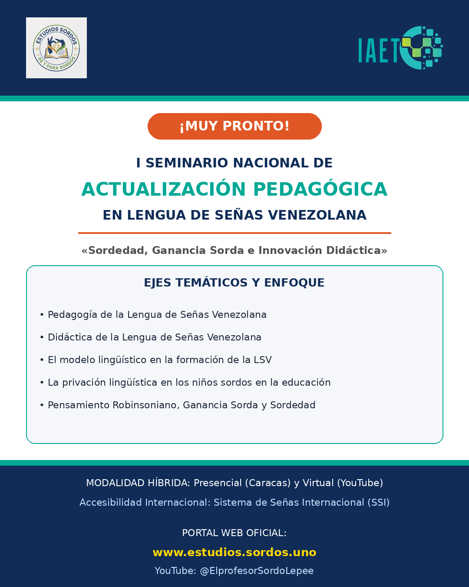
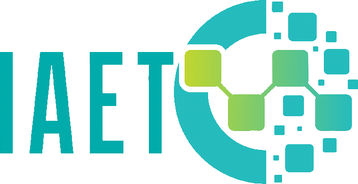

Modo demostración: los datos se guardan solo en este navegador.
Conecta Supabase en js/config.js para usar la base de datos real.
Muy pronto: I Seminario Nacional de Actualización Pedagógica en LSV
Esta página está en preparación. Cuando el comité organizador abra las inscripciones, aquí encontrarás el programa completo y la planilla de inscripción.
¡Muy pronto!
I Seminario Nacional de Actualización Pedagógica en Lengua de Señas Venezolana
«Sordedad, Ganancia Sorda e Innovación Didáctica»
Modalidad híbrida: presencial en Caracas (aforo de 300 a 500 personas) y virtual, con transmisión en vivo por el canal de YouTube @ElprofesorSordoLepee y accesibilidad en Sistema de Señas Internacional (SSI) cuando la audiencia lo requiera.
Este portal es el centro digital del seminario: aquí se centralizan la inscripción, la postulación de ponencias y, después del evento, las memorias y la certificación digital.

Ejes temáticos y enfoque
Cinco líneas de trabajo guían las ponencias, los módulos y las mesas del seminario.
Pedagogía de la LSV
La enseñanza de la Lengua de Señas Venezolana como disciplina con metodología propia, diseñada por y para la comunidad Sorda.
Didáctica de la LSV (L1 y L2)
Estrategias diferenciadas para la adquisición natural en niños sordos (L1) y el aprendizaje en adultos oyentes o profesionales (L2).
El modelo lingüístico en la formación
El lugar de la gramática visual, los marcadores no manuales y la sintaxis espacial en la formación de formadores de LSV.
Privación lingüística
El impacto de la privación lingüística en niños sordos dentro del sistema educativo y las respuestas pedagógicas posibles.
Pensamiento Robinsoniano, Sordedad y Ganancia Sorda
«O inventamos o erramos»: la pedagogía crítica de Simón Rodríguez unida a la Sordedad (Deafhood) y a la Ganancia Sorda (Deaf Gain).
Comité organizador
Una iniciativa concebida, diseñada y liderada por el equipo de Estudios de y para Sordos.
| Integrante | Función |
|---|---|
| Dr. Javier Ramírez González | Coordinador general |
| Lcdo. Gil Escogar | Logística |
| Lcda. Yoliber Bellorin | Publicidad y difusión |
| Lcda. Poema Rondón y Lcda. Morelbis Benavides | Protocolo |
| Lcdo. Jesús Daniel Sánchez | Apoyo tecnológico |
| Lcdo. Douglas Cubillán, Lcdo. Bryan Mejías, Lcdo. Eliam Boza y Lcda. María Piña | Equipo de apoyo complementario |
| SENACOA | Intérpretes de Lengua de Señas Venezolana |
| MSc. Iván Sanguino y MSc. Pablo Peñaloza | Animación cultural en Cultura Sorda |
Programa propuesto (dos días)
El cronograma definitivo se publicará aquí mismo una vez cerrado el arbitraje de ponencias.
Día 1 · Fundamentos, gramática funcional y cultura sorda
| Horario | Actividad / eje temático | Modalidad |
|---|---|---|
| 08:00 - 09:00 | Acreditación, entrega de material y bienvenida | Registro |
| 09:00 - 09:45 | Apertura: la Sordedad y la Ganancia Sorda en la educación del siglo XXI | Ponencia magistral |
| 09:45 - 10:45 | Módulo I: actualización lingüística de la LSV: variaciones diatópicas, neologismos y registro académico | Conferencia e intercambio |
| 10:45 - 11:15 | Receso / espacio de encuentro visual | Pausa |
| 11:15 - 12:30 | Módulo II: didáctica de la LSV como L1 y L2: enfoques comunicativos y bilingües | Panel de expertos |
| 12:30 - 02:00 | Almuerzo | Libre |
| 02:00 - 03:30 | Mesa de ponencias 1: trabajos de investigación aprobados (mesas paralelas A y B) | Exposición oral/visual (15 min por ponente) |
| 03:30 - 04:30 | Plenaria y debate sobre la profesionalización del docente de LSV | Plenaria abierta |
Día 2 · Metodología, innovación tecnológica y evaluación
| Horario | Actividad / eje temático | Modalidad |
|---|---|---|
| 08:30 - 09:30 | Módulo III: marcadores no manuales y sintaxis espacial: estrategias de enseñanza avanzada | Masterclass práctica |
| 09:30 - 10:45 | Módulo IV: tecnología educativa, inteligencia artificial y creación de recursos didácticos visuales | Taller / demostración |
| 10:45 - 11:15 | Receso / fotografía oficial del seminario | Pausa |
| 11:15 - 12:30 | Mesa de ponencias 2: experiencias pedagógicas significativas en la comunidad de aprendizaje | Exposición oral/visual (15 min por ponente) |
| 12:30 - 02:00 | Almuerzo | Libre |
| 02:00 - 03:30 | Mesa de trabajo: hacia la Asociación de Profesionales Sordos de la Pedagogía de la LSV | Mesas de construcción |
| 03:30 - 04:30 | Lectura de conclusiones, declaración final del seminario y entrega de certificados | Cierre formal |
Planilla de inscripción
Evento bilingüe (LSV / español) en modalidad híbrida. La certificación digital se envía al correo electrónico registrado.
Organizaciones que apoyan el seminario
